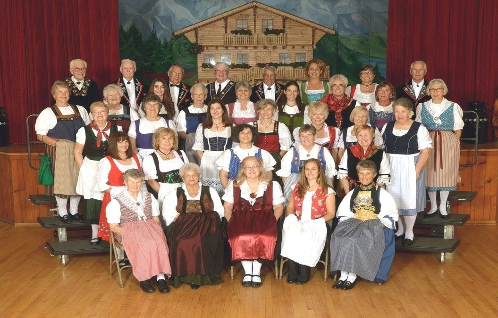

Home / Swiss Echoes
The club's chorus, founded 1947Swiss Echoes
The chorus has sung at every Sängerfest of the United Swiss Singing Societies since 1948, and has hosted five of them.
The chorus
The Swiss Echoes began in 1947 with 28 charter members and John Meyer as director. The chorus joined the United Swiss Singing Societies of the Pacific Coast and sang at its first Sängerfest in Los Angeles in 1948. It has been to every one since.
The club has hosted the Sängerfest five times: in 1956, 1960, 1978, 2002 and 2017. It also hosted the first California Swiss Singing and Jodeling Festival, in 1956.
Agnes Litfin-Olmsted of Stockton directs the chorus. SaraRae Vanderhelm of Modesto accompanies.
Concerts
The chorus gives a concert each spring and each autumn, singing melodies from Switzerland in traditional costume.
More than 75 singers came from across the country for the spring concert in April 2026, with alphorn players and yodelers. A Swiss dinner and dancing to the Haslital Kapelle followed.
Singing with us
New singers are welcome. Practice is Tuesday evenings from seven to nine at the hall.
Write to SJVSwissEchoes@gmail.com, or call Chico Gunder, the chorus president, on (209) 322-5199.
